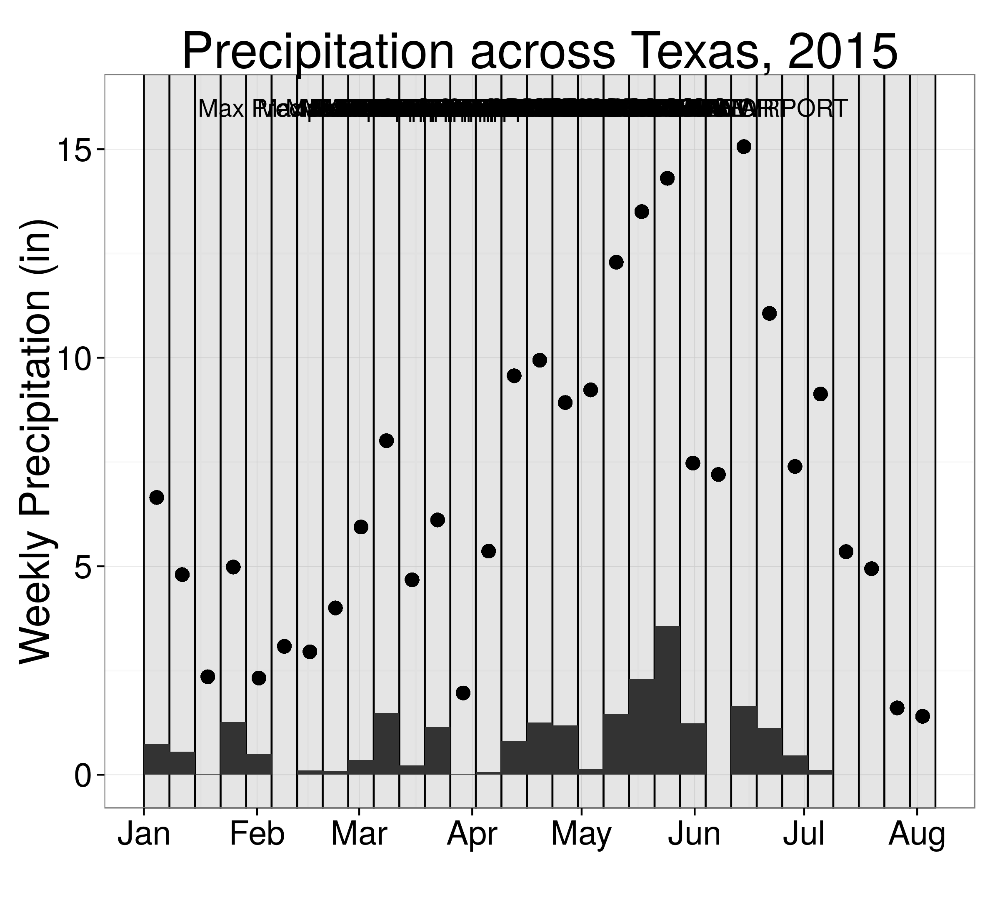
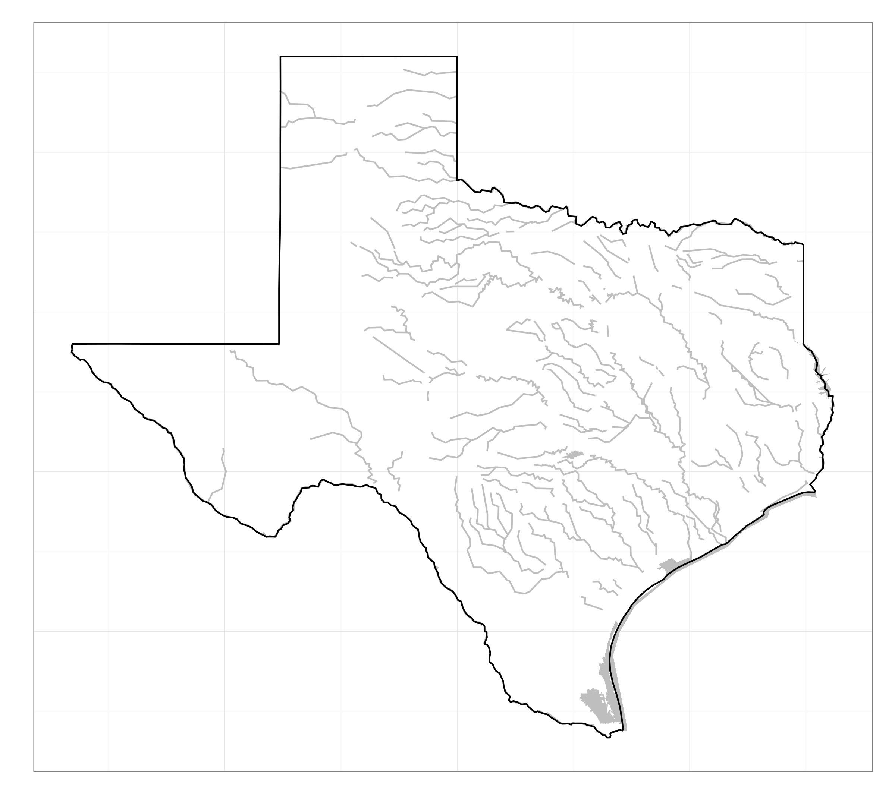
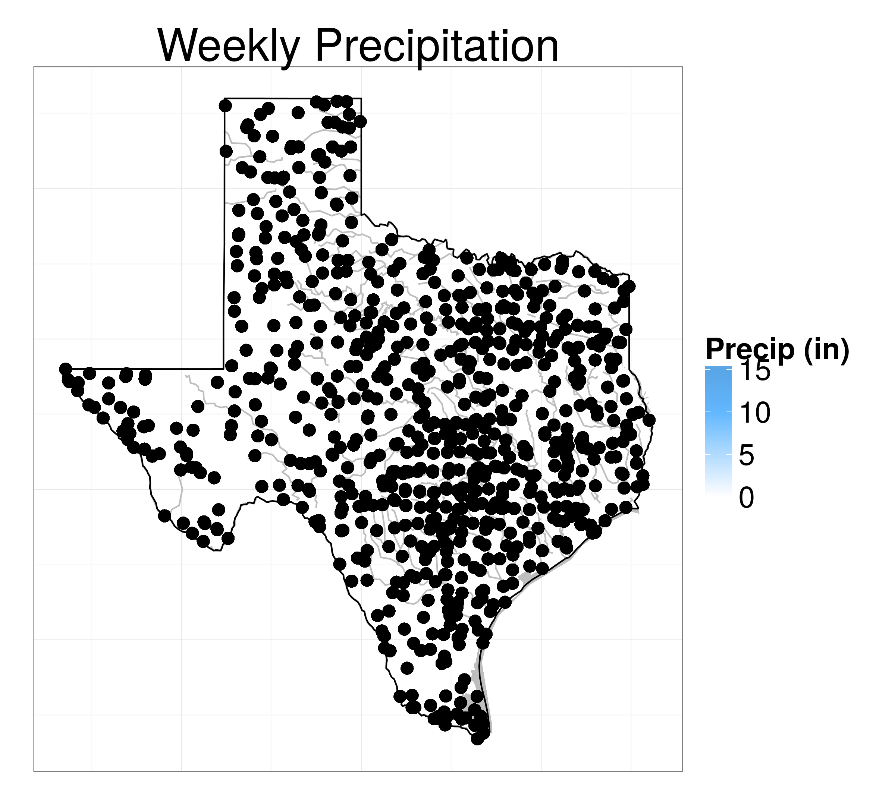

Animint:
Interactive Web-Based Animations Using
Ggplot2's Grammar of Graphics
Susan VanderPlas, Kevin Ferris, Tony Tsai,
Carson Sievert, and Toby Hocking
August 10, 2015
Grammar of Graphics

Grammar of Graphics
ggplot(data=profile, aes(x=height, fill=gender)) + geom_bar(aes(y=..count..), position="stack", stat="bin")

It allows for specification of complex plots consisting of multiple layers.
Animint
extends ggplot2 with interactive aesthetics
- clickSelects is an aesthetic which indicates which variable to use as a key when a plot object is clicked.
- showSelected is an aesthetic which indicates the variable to show in response to selection of a plot object.
- The combination of these two aesthetics allows us to create linked, interactive plots.
Animint
extends ggplot2 with interactive aesthetics
- Statistically, this allows us to interactively show conditional distributions (when the conditioning variable is categorical or discretized)
- Animint also adds other aesthetics to this framework: hoverSelects , tooltip , and time (for automatic iteration between cases, that is, animation)
Building Plots with Animint
and ggplot2
Demo Dataset
-
Weather records from stations in Texas, Jan - July 2015
From the Global Historical Climatology Network - Multiple stations within a small area have been combined and labeled as the most central station in the region.

May 2015 flooding in Houston, TX
Building Plots with Animint and ggplot2
texasPrecipitation <- ggplot() + geom_tallrect(aes(xmin=min.day, xmax=max.day, clickSelects=week), data=statesummary, alpha=.1, fill="black", color="black") + geom_rect(aes(xmin=min.day, xmax=max.day, ymin=0, ymax=precip.median, clickSelects=week), data=statesummary) + geom_point(aes(x=day, y=precip.max), size=4, fill="transparent", color="black", data=statesummary) + geom_text(aes(x=ymd("2015-04-15"), y=16, label=label, showSelected=week), data=statesummary) + xlab("") + ylab("Weekly Precipitation (in)") + ggtitle("Precipitation across Texas, 2015") + theme_animint(width=350, height=540)

Compile to HTML:
animint2dir( list( # list of all of the plots to # render with animint precip = texasPrecipitation ) )
Building Plots with Animint and ggplot2
Interactivity within a single plot
Building Plots with Animint and ggplot2
Adding linked plots
If we select a week (clickSelects) on the precipitation graph,we might want to see the statewide precipitation (showSelected)
texasOutline <- ggplot() + geom_path(data=rivers, aes(x=long, y=lat, group=group), color="grey", size=.5) + geom_polygon(data=lakes, aes(x=long, y=lat, group=group), fill="grey", size=.5) + geom_path(data=tx, aes(x=long, y=lat, group=group)) + theme(axis.line = element_blank(), axis.text = element_blank(), axis.ticks = element_blank(), axis.title = element_blank()) + theme_animint(width=600, height=540) # Size of the plot when rendered in HTML

Building Plots with Animint and ggplot2
Adding linked plots
weatherStations <- texasOutline + ggtitle("Weekly Precipitation") + geom_point(data=weathersummary, aes(x=longitude, y=latitude, # Standard aesthetics showSelected=week, tooltip=station.name,# animint aes fill=precip.wk), color="black", size=4) + # animint specifies fill and color separately for points scale_fill_gradient2("Precip (in)", low="white", mid="steelblue1", midpoint=10, high="steelblue3")

Building Plots with Animint and ggplot2
Adding linked plots
Animint Internals
R to d3 compiler
(R code, runs once)
- Saves data file(s) for each plot layer
- Creates a JSON file which contains
- Descriptions of each plot layer (aesthetic mappings, scales, ...)
- Locations of data file(s) for each layer
- A map of links between layers due to interactive aesthetics (clickSelects, hoverSelects, showSelected, tooltip, ...)
- Theme information
Animint Renderer
(JavaScript code, runs in browser on page load)
- Downloads the JSON file using d3.json()
- Builds the plot, legend, and selectors
- Loads the data for each (currently selected/displayed) geom
- Draws selected geoms
- Re-draws geoms based on selection events
Animint Bindings
- HTML:
animint2dir()saves an index.html file, required javascript files, the JSON plot description, and data to a local directory - Gist:
animint2gist()posts a gist to your github account (which can be viewed using http://bl.ocks.org/) - knitr bindings:
structure(..., class="animint")will create an interactive applet when knitting output to HTML - shiny bindings:
renderAnimint() and animintOutput()create an animint applet within a shiny app
(except within a shiny applet or interactive markdown document)
Other Features
- Multiple selection:
selector.types = list(station = "multiple") - Tooltips:
aes(tooltip = label) - CSS ID variables:
aes(id = idvar)allows for customization with CSS - Links:
aes(href = url)creates links that open in a new tab - Transitions:
aes(key = variable)creates smooth transitions - Initial selector values:
first = list(variable = value)will select "value" on initial load